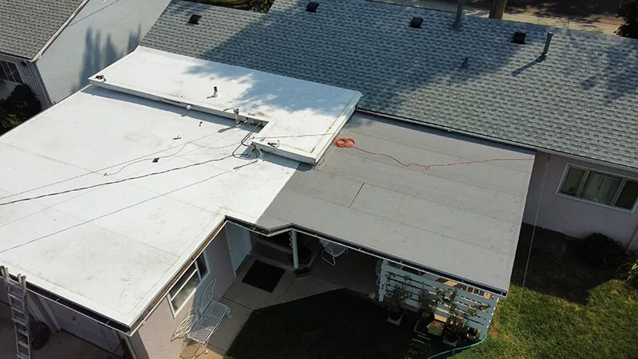
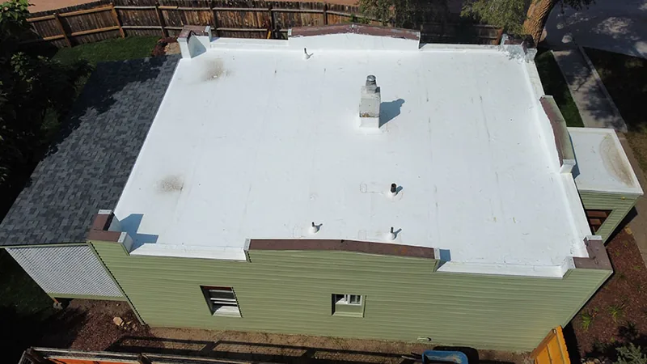
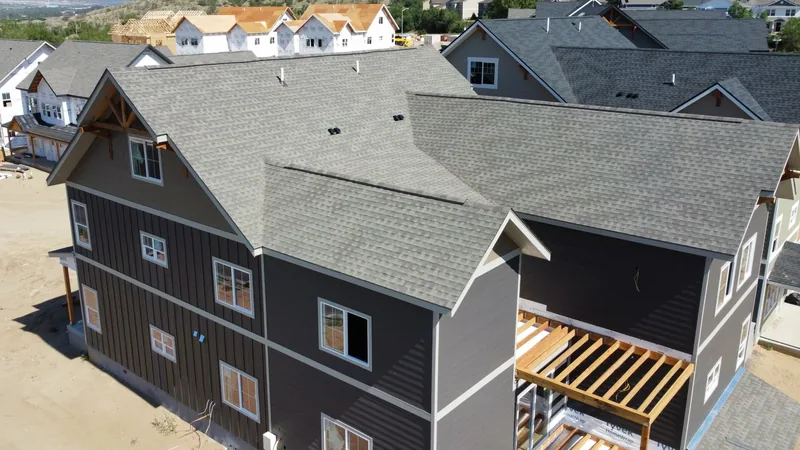

Oak Ridge, TN
Roof repair and replacement in Oak Ridge
Oak Ridge has 80-year-old wartime houses and recent subdivisions a few miles apart. They need very different things from a roofer, and we price each one for what it is.

- Family roofing company. Since 2018.
- 4,000+ projects documented. On record, job by job.
- Free inspections. Written, line-by-line prices.
- 24-hour emergency line. Leaks and storm damage, any hour.
- All of East Tennessee. Twelve counties, one phone number.
Permits at a glance
- Who issues permits
- Oak Ridge permit offices are covered on the Anderson County page.
- Before we price
- Your Oak Ridge parcel gets matched to its office first.
Oak Ridge at a glance
- Built in 1942 for the Manhattan Project, and incorporated as a city in 1959.
- 31,402 people at the 2020 census, in Anderson and Roane counties.
- Skidmore, Owings & Merrill designed some 2,500 prefabricated cemesto homes here for Manhattan Project workers and their families (Wikipedia).
Source: Wikipedia, Oak Ridge, unless noted.
The cemesto houses
Many of the houses built in the 1940s were prefabricated cemesto homes, and their roofs are low-slope. A cemesto panel is a core of sugarcane fiber board surfaced on both sides with asbestos cement, according to Wikipedia's cemesto article. So before any tear-off on one of these houses, we find out what the existing roof and wall materials are and handle them by the rules.
Low-slope roofs hide trouble well. Water can sit in a shallow spot for years, softening the deck under it long before a stain shows inside.

Why a low slope needs a different roof
On a low slope, water moves slowly, and wind can push rain uphill under the shingle edges. The building code sets a minimum pitch for asphalt shingles, and the flattest sections of a cemesto roof can fall below it. There, a membrane or another low-slope system is the right product. Ask each roofer who bids which product goes on the flat sections. A quote that says shingles everywhere hasn't looked closely.
The Preserve and Hendrix Creek
The Preserve at Oak Ridge, annexed in 2003, and Hendrix Creek are recent subdivisions with architectural shingles. Their roofs are mostly young, so the work out there is storm damage and first repairs: a few shingles gone after a wind, a pipe boot cracked by the sun. Learn your shingle line and color now, so a repair after a storm can match.

Common questions
Can my cemesto house have a shingle roof?
It depends on the pitch. Where the slope is steep enough, shingles are an option. Where it's too flat, a membrane roof is the better fit, and from the street you barely see it. We measure the pitch at the inspection and price what fits.
What does a membrane roof look like on a house?
From the street, very little. A low-slope roof sits mostly out of sight, so color and texture matter less than on a steep roof. A white or light-gray membrane reflects the summer sun and keeps the rooms below cooler all summer long.
What happens if you find rotted wood under the shingles?
It gets replaced, and only the boards that are actually soft. Rotted decking won't hold nails, and shingles over soft wood fail early. Your written price already lists the cost per sheet, so you know the number before anything turns up, and you'll know how many sheets went in.
Do you pull the permit?
Yes. Inside Knoxville city limits a re-roof needs a city building permit and an inspection after tear-off. Farragut, Maryville, Oak Ridge and the counties set their own rules; Farragut, for example, says a plain re-roof usually doesn't need one. We check the rule for your address and pull the permit when one is needed.
Get a free look at your Oak Ridge roof
A few boxes. We'll call you back to pick a time.
Rather talk? Call (865) 830-8126. Rather text? Send a photo.